Dynamic Time Warping
Longzhu Shen
GeoComput & ML
18 May 2021
Installation
$ coda install -c conda-forge dtw-python
$ coda install pywavelets
[4]:
import numpy as np
from dtw import *
import matplotlib.pyplot as plt
First Example
[68]:
## A noisy sine wave as query
idx = np.linspace(0,6.28,num=100)
query = np.sin(idx) + np.random.uniform(size=100)/10.0
## A cosine is for template; sin and cos are offset by 25 samples
template = np.cos(idx)
[69]:
## Find the best match with the canonical recursion formula
alignment = dtw(query, template, keep_internals=True)
## Display the warping curve, i.e. the alignment curve
alignment.plot(type="threeway")
plt.show()
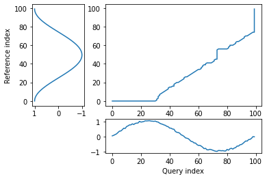
[63]:
alignment.normalizedDistance
[63]:
0.12598951335028086
[72]:
## See the recursion relation, as formula and diagram
print(alignment.stepPattern)
alignment.stepPattern.plot()
plt.show()
Step pattern recursion:
g[i,j] = min(
g[i-1,j-1] + 2 * d[i ,j ] ,
g[i ,j-1] + d[i ,j ] ,
g[i-1,j ] + d[i ,j ] ,
)
Normalization hint: N+M
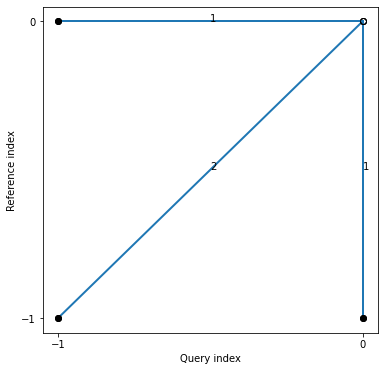
Parameters
[73]:
## Align and plot with the Sakoe-Chiba
dtw(query, template, keep_internals=True, window_type="sakoechiba", window_args={'window_size':2},
step_pattern=symmetricP1).plot(type="twoway",offset=-2)
plt.show()
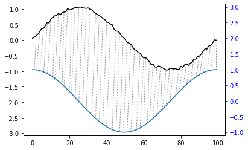
[75]:
print(symmetricP1)
symmetricP1.plot()
plt.show()
Step pattern recursion:
g[i,j] = min(
g[i-1,j-2] + 2 * d[i ,j-1] + d[i ,j ] ,
g[i-1,j-1] + 2 * d[i ,j ] ,
g[i-2,j-1] + 2 * d[i-1,j ] + d[i ,j ] ,
)
Normalization hint: N+M
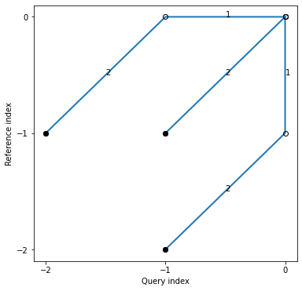
[74]:
print(symmetricP2)
symmetricP2.plot()
plt.show()
Step pattern recursion:
g[i,j] = min(
g[i-2,j-3] + 2 * d[i-1,j-2] + 2 * d[i ,j-1] + d[i ,j ] ,
g[i-1,j-1] + 2 * d[i ,j ] ,
g[i-3,j-2] + 2 * d[i-2,j-1] + 2 * d[i-1,j ] + d[i ,j ] ,
)
Normalization hint: N+M
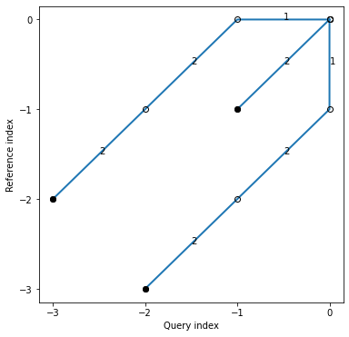
Shifted TS
[55]:
idx = np.linspace(0,6.28,num=100)
query = np.sin(idx)
reference = np.sin(idx + 0.314)
[57]:
alignment = dtw(query, reference, keep_internals=True)
alignment.plot(type="twoway")
plt.show()
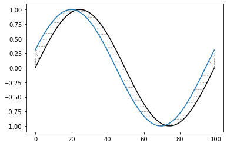
[59]:
alignment.normalizedDistance
[59]:
0.011063586676074938
[58]:
plt.plot(reference,color='k')
plt.plot(query,color='b')
plt.plot(alignment.index2,query[alignment.index1],'--',color='r')
plt.show()
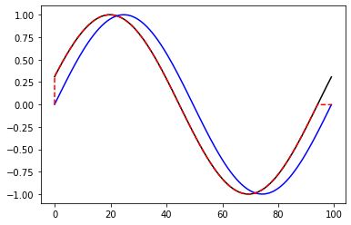
Warping Path
[6]:
idx1 = np.linspace(0,6.28,num=18)
query = np.sin(idx1 + 3.14/10)
idx2 = np.linspace(0,6.28,num=20)
reference = np.sin(idx2)
[7]:
alignment = dtw(query, reference, keep_internals=True, step_pattern=symmetricP1,window_type="sakoechiba", window_args={'window_size':4})
[8]:
alignment = dtw(query, reference, keep_internals=True)
alignment.plot(type="twoway")
plt.show()
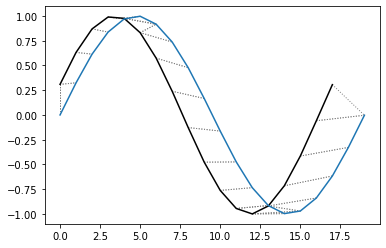
[9]:
fig = plt.figure(figsize=(20,20))
ax = fig.add_axes([0, 0, 0.5, 0.5])
for (j,i),label in np.ndenumerate(np.round(alignment.localCostMatrix,1)):
ax.text(i,j,label,ha='center',va='center')
plt.imshow(alignment.localCostMatrix,alpha=0.5,origin='lower')
plt.plot(alignment.index2,alignment.index1)
plt.show()
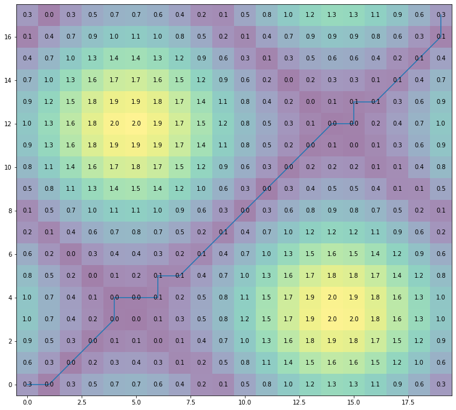
Wavelets
TS Processing
[1]:
import pywt
import pywt.data
[8]:
pywt.families()
[8]:
['haar',
'db',
'sym',
'coif',
'bior',
'rbio',
'dmey',
'gaus',
'mexh',
'morl',
'cgau',
'shan',
'fbsp',
'cmor']
[5]:
plt.plot(pywt.data.nino()[0],pywt.data.nino()[1])
plt.show()
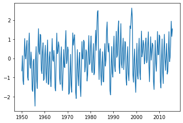
[6]:
sLst = np.arange(1, 31)
cwtmatr, freqs = pywt.cwt(pywt.data.nino()[1], sLst, 'mexh')
[7]:
plt.plot(cwtmatr[3])
plt.plot(cwtmatr[15])
plt.show()
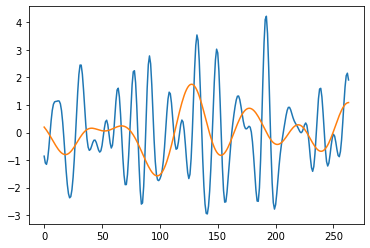
2D Application
[14]:
# Load image
original = pywt.data.camera()
# Wavelet transform of image, and plot approximation and details
titles = ['Approximation', ' Horizontal detail',
'Vertical detail', 'Diagonal detail']
coeffs2 = pywt.dwt2(original, 'bior1.3')
LL, (LH, HL, HH) = coeffs2
fig = plt.figure(figsize=(12, 3))
for i, a in enumerate([LL, LH, HL, HH]):
ax = fig.add_subplot(1, 4, i + 1)
ax.imshow(a, interpolation="nearest", cmap=plt.cm.gray)
ax.set_title(titles[i], fontsize=10)
ax.set_xticks([])
ax.set_yticks([])
fig.tight_layout()
plt.show()
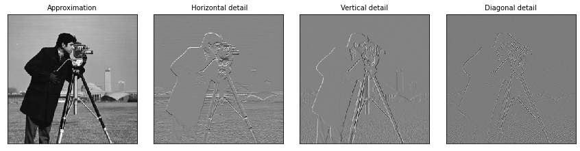
References
Toni Giorgino (2009). Journal of Statistical Software, 31(7), 1-24, doi:10.18637/jss.v031.i07.
Gregory R. Lee, Ralf Gommers, Filip Wasilewski, Kai Wohlfahrt, Aaron O’Leary (2019).https://doi.org/10.21105/joss.01237.